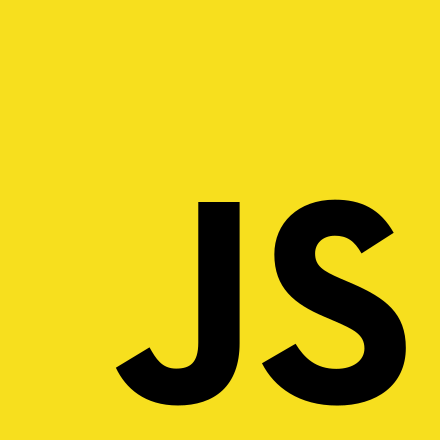

JavaScript
<Жаба?>
JavaScript (JS) — это интерпретируемый язык программирования, который используют для написания frontend- и backend-частей сайтов, а также мобильных приложений. С его помощью сайты делают интерактивными: добавляют всплывающие окна, анимацию, кнопки лайков и формы для отправки информации.
C#
<Акула?>
С# («Си Шарп») – один из наиболее быстро растущих, востребованных и при этом «удобных» языков программирования. Это модификация фундаментального языка С от компании Microsoft, призванная создать наиболее универсальное средство для разработки программного обеспечения для большого количества устройств и операционных систем.
Python
<Питон?>
Интерпретируемый, интерактивный, объектно-ориентированный и высокоуровневый язык программирования общего назначения c динамической строгой типизацией и автоматическим управлением памятью, ориентированный на повышение производительности разработчика, читаемости кода, а также на обеспечение переносимости написанных на нем программ. Задумка по реализации языка появилась в конце 1980-х годов, а разработка его реализации началась в 1989 году сотрудником голландского института CWI Гвидо ван Россумом.
Java
<Кофе?>
Язык программирования общего назначения со строгой типизацией. Относится к объектно-ориентированному виду. Используется для написания приложений и программных кодов, которые смогут работать на различных платформах.
PHP
PHP (Hypertext PreProcessor, «препроцессор гипертекста») — это скриптовый язык программирования. Имеет открытый исходный код. Изначально создавался для разработки веб-приложений, но в процессе обновлений стал языком общего назначения.